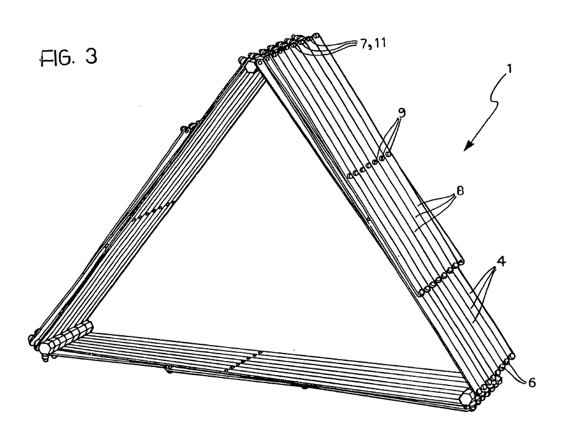
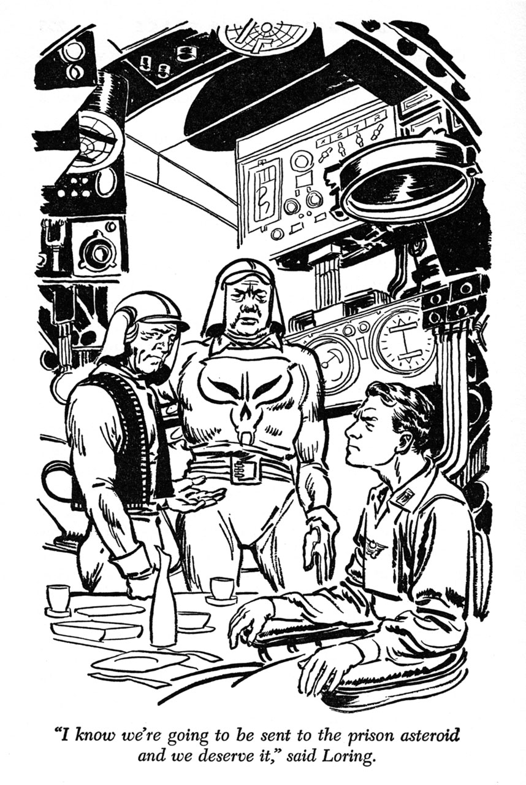

Et si de petits pouvoirs impliquaient de grandes responsabilités ? Et si les poules avaient des dents, les traiterions-nous autrement?
Et si nous devenions les héros de notre super-vie? Et si en se sortant la tête de l’eau, on parvenait à respirer ? Et si on arrêtait de se mettre sous pression ? Et si on passait à l’action, man and woman ? Et si l’alternatif devenait une norme et la norme une alternative ? Et si c’était possible ? Et si au lieu de vouloir rencontrer toujours le troisième type, on commençait par le premier ? 
Et si l’arbre ne cachait plus la forêt ? Et si Marie ne s’appelait plus Laforet ? Et si tout se jouait la nuit ? Et si l’origine de tout cela se situait à Forest? (Private Joke 2)
La forêt est le premier opéra composé par Baudouin de Jaer, opéra de chambre d’une durée de 45 minutes, sur un livret de Stéphane Arcas - adapté pour l’occasion, Dans un décor sobre, trois personnages occupent la scène : le couple : l’homme A– un ténor et une femme B - une mezzo soprano. Le rôle de C, la narratrice, est tenu par une comédienne. Tous trois déambulent dans la forêt des arbres « comme ça ». La précision, la complexité de la nature et l’absence totale de réponses alimentent l’inspiration musicale de Baudouin de Jaer. Venez voir et dites-nous quelle est cette faille, cette perte dont on nous parle si intensément...
A dit : « Cet arbre-là. Je l’ai déjà vu, je suis sûr qu’on est déjà passé ici. »
Livret: Stéphane Arcas Musique: Baudouin de Jaer Direction musicale: Martijn Dendivel Mise en scène et Scénographie: Stéphane Arcas Avec l’ensemble BESIDES, Cécile Chèvre, distribution en cours…
Une production de Noodik Productions, en coproduction avec la Balsamine. Avec le soutien de la Fédération Wallonie-Bruxelles.